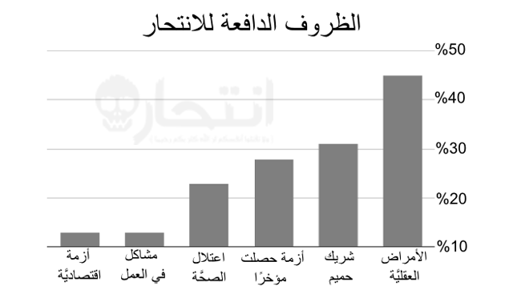
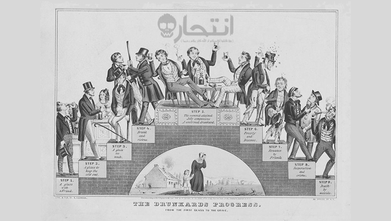

الانتحار هو الفعل الذي يتضمن تسبب الشخص عمداً في قتل نفسه. يرتكب الانتحار غالباً بسبب اليأس، والذي كثيراً ما يُعزى إلى اضطراب نفسي مثل الاكتئاب أو الهوس الاكتئابي أو الفصام أو إدمان الكحول أو تعاطي المخدرات. وغالبًا ما تلعب عوامل الإجهاد مثل الصعوبات المالية أو موت شخص عزيز أو المشكلات في العلاقات الشخصية دوراً في ذلك. وقد أوردت بيانات لمنظمة الصحة العالمية بأن 75% من حالات الانتحار تسجل ما بين متوسطي الدخل وسكان الدول الفقيرة. وتشمل الجهود المبذولة لمنع الانتحار تقييد الوصول إلى الأسلحة النارية، وعلاج الأمراض النفسية وحضر استعمال المخدرات، فضلاً عن تحسين التنمية الاقتصادية.
تختلف الطريقة الأكثر شيوعًا للانتحار حسب البلد، كما ترتبط جزئيًا بمدى توافر الوسائل. وتشمل الطرق الشائعة ما يلي: الشنق والتسمم بواسطة المبيدات الحشرية والأسلحة النارية. هناك ما بين 800.000 إلى مليون شخص تقريبًا يموتون كل عام عن طريق الانتحار، مما يجعله عاشر الأسباب الرئيسية للوفاة في العالم. المعدلات أعلى في الرجال عنه في النساء، حيث أن الذكور أكثر عرضة لقتل أنفسهم من الإناث بمقدار 3-4 مرات. هناك ما يقدر بنحو من 10 إلى 20 مليون محاولة انتحار فاشلة كل عام. وهذه المحاولات أكثر شيوعًا بين الشباب والإناث.
وقد تأثرت وتباينت وجهات النظر حول الانتحار بالموضوعات الوجودية العامة مثل الدين والشرف ومعنى الحياة. تعدّ الأديان الإبراهيمية تقليديًا أن الانتحار معصية لله ويرجع ذلك إلى الإيمان بقدسية الحياة. وخلال عهد الساموراي في اليابان، كانت طقوس السيبوكو تعدّ وسيلة محترمة للتكفير عن الفشل أو تعدّ شكلًا من أشكال الاحتجاج. الستي، وهي ممارسة جنائزية هندية يجرمها القانون الآن، كانت تستلزم أن تقوم الأرملة بالتضحية بنفسها في المحرقة الجنائزية لزوجها، سواءً برغبة أو تحت ضغط من الأسرة والمجتمع. الانتحار ومحاولة الانتحار، في حين كانت جريمة يُعاقَب عليها جنائيًا في السابق، إلا أنها لم تعد كذلك في معظم البلدان الغربية. وفي المقابل، فهي لا تزال تمثل جريمة جنائية في معظم البلدان الإسلامية. في القرنين العشرين والحادي والعشرين، استُخدم الانتحار في شكل التضحية بالنفس كوسيلة للاعتراض واستُخدمت الهجمات الفدائية والتفجيرات الانتحارية كتكتيك عسكري أو إرهابي.
التعريفات
الانتحار، أو ما يُعرف أيضًا بالانتحار المكتمل، هو "قيام الشخص بقتل نفسه." أما محاولة الانتحار أو السلوك الانتحاري غير المؤدي إلى الموت فهو يمثل إيذاء النفس مع الرغبة في إنهاء الحياة دون أن يؤدي ذلك إلى الموت. أما الانتحار بمساعدة الغير فيكون عندما يساعد شخص ما شخصًا آخر على قتل نفسه على نحو غير مباشر، سواءً عن طريق تقديم المشورة أو الوسائل اللازمة لتحقيق هذه الغاية. وهذا على عكس القتل بدافع الشفقة حيث يقوم شخص آخر بدور أكثر فعالية في إنهاء حياة شخص ما. الأفكار الانتحارية تمثل تفكير الشخص في إنهاء حياته.
عوامل الخطورة

الظروف الدافعة للانتحار من 16 ولاية أمريكية في عام 2008.
تشمل العوامل التي تؤثر على خطورة الانتحار الاضطرابات النفسية، وإساءة استعمال المخدرات، والحالات النفسية، والأوضاع الثقافية والعائلية والاجتماعية، فضلاً عن الجينات الوراثية. وكثيرًا ما يجتمع كل من المرض النفسي وتعاطي المواد المخدرة معًا. وتشمل عوامل الخطورة الأخرى القيام مسبقًا بمحاولة انتحار، أو سهولة الحصول على وسيلة لارتكاب هذا الفعل، أو وجود سجل عائلي للانتحار، أو وجود إصابات الدماغ الرضية. على سبيل المثال، وُجد أن معدلات الانتحار تكون أكبر لدى الأسر التي تقتني الأسلحة النارية من الأسر التي لا تقتنيها. العوامل الاجتماعية والاقتصادية مثل البطالة والفقر والتشرد والتمييز ربما تدفع أيضًا إلى الأفكار الانتحارية. ومن بين المقدمين على الانتحار، هناك نسبة بين 15–40% يتركون رسالة انتحار. ويبدو أن الجينات الوراثية مسؤولة عما بين 38% و55% من السلوكيات الانتحارية. أما المحاربون القدامى فإنهم معرضون لخطورة الانتحار أكثر من غيرهم، ويرجع ذلك جزئيًا إلى تميزهم بارتفاع معدلات الأمراض النفسية والمشاكل الصحية الجسدية المتعلقة بالحرب.
الاضطرابات النفسية
الاضطرابات النفسية غالبًا ما توجد في وقت الانتحار بتقديرات تتراوح من 27% إلى أكثر من 90%. ومن بين هؤلاء الذين دخلوا إلى إحدى وحدات الطب النفسي، يبلغ معدل الخطورة على حياتهم من الانتحار المكتمل حوالي 8.6%. ومن إجمالي عدد الأشخاص الذين يموتون بفعل الانتحار، فإن نصفهم ربما يعاني من الاضطراب الاكتئابي الحاد؛ حيث أن المعاناة من ذلك الاضطراب أو غيره من اضطرابات المزاج مثل الاضطراب ثنائي القطب تزيد من خطورة الانتحار بمعدل 20 مرة. وتشمل الحالات الأخرى المتضمَنة انفصام الشخصية (14%)، واضطرابات الشخصية (14%)، والاضطراب ثنائي القطب، واضطراب ما بعد الصدمة. ويُذكر أن هناك حوالي 5% من الأشخاص المصابين بمرض انفصام الشخصية يموتون من خلال الانتحار. كما تمثل اضطرابات الأكل إحدى الحالات الأخرى عالية الخطورة.
ويُعد وجود سجل من محاولات الانتحار السابقة أكبر مؤشر للانتحار المكتمل في نهاية الأمر. فهناك ما يقرب من 20% من حالات الانتحار كانت لها محاولة سابقة، ومن بين أولئك الذين حاولوا الانتحار، هناك 1% نجحوا في الانتحار المكتمل خلال عام واحد وهناك أكثر من 5% يقومون بالانتحار بعد 10 أعوام. بينما لا تُعتبر أفعال إيذاء النفس محاولات انتحار، ويرتبط وجود سلوك إيذاء النفس بزيادة احتمال الانتحار. فيما يقرب من 80% من حالات الانتحار المكتمل، يكون الفرد قد راجع الطبيب خلال السنة الأخيرة قبل وفاته، ومنهم 45% في الشهر الأخير قبل الوفاة. ومن أولئك الذين أتموا الانتحار، هناك ما يقرب من 25-40% كانوا على اتصال بخدمات الصحة النفسية في السنة السابقة للوفاة.
تعاطي المخدرات

"لوحة مراحل تطور مدمن الخمر" 1846 توضح كيف أن إدمان الكحول يمكن أن يؤدي إلى الانتحار
تعاطي المخدرات هو ثاني أكثر عوامل الخطورة انتشارًا فيما يخص الانتحار بعد الاكتئاب الحاد والاضطراب ثنائي القطب. ويرتبط كل من إساءة استعمال المخدرات المزمنة والتسمم الحاد ارتباطًا وثيقًا. وعندما يقترن هذا بالحزن الشخصي، مثل الفجيعة، تزداد الخطورة أكثر وأكثر. وبالإضافة إلى ذلك، فإن إساءة استعمال المخدرات ترتبط ارتباطًا وثيقًا باضطرابات الصحة النفسية.
ويكون معظم الأشخاص تحت تأثير العقاقير المهدئة والمنومة (مثل الكحول أو البنزوديازيبينات) عند قيامهم بالانتحار، حيث يظهر إدمان الكحول فيما بين 15% و61% من الحالات. ويُلاحظ أن البلدان التي لديها معدلات أعلى من تعاطي الكحول وكثافة أكبر للحانات عمومًا لديها أيضًا معدلات أعلى للانتحار مع ارتباط هذه العلاقة أساسًا باستخدام الكحول المقطر بدلاً من استخدام الكحول غير المقطر. وهناك ما يقرب من 2,2-3,4% من أولئك الذين تلقوا العلاج من إدمان الكحول في مرحلة ما من حياتهم يموتون عن طريق الانتحار. ويُذكر أن مدمني الكحول الذين يحاولون الانتحار هم عادة من الذكور الأكبر سنًا الذين حاولوا الانتحار في الماضي. كما أن هناك نسبة ما بين 3 و35% من الوفيات وسط متعاطي الهيروين تعود إلى الانتحار (أكثر بمقدار 14 ضعف تقريبًا من أولئك الذين لا يتعاطونه).
إن تعاطي الكوكايين والميثامفيتامين يرتبط ارتباطًا وثيقًا بالانتحار. وتكون الخطورة أكبر لدى متعاطي الكوكايين خلال مرحلة الانسحاب. كما أن متعاطي المستنشقات هم أيضًا معرضون لخطورة كبيرة، حيث يُقدم منهم حوالي 20% على محاولة الانتحار في مرحلة ما من حياتهم، بينما يفكر فيه أكثر من 65% منهم. كذلك، فإن تدخين السجائر يرتبط ارتباطًا وثيقًا بخطورة الانتحار. وهناك القليل من الأدلة حول السبب في وجود هذه الارتباطات والعلاقات؛ ومع ذلك فقد تم الافتراض أن أولئك الذين لديهم الاستعداد للتدخين لديهم أيضًا الاستعداد للانتحار، حيث أن التدخين يسبب مشاكل صحية مما يجعل الناس يرغبون بالتالي في إنهاء حياتهم، كما أن التدخين يؤثر على كيمياء المخ مما يسبب الاستعداد للانتحار. ومع ذلك، فلا يبدو أن القنب يزيد هذه الخطورة بمفرده.
مشاكل القمار
ترتبط مشاكل القمار بزيادة التفكير في الانتحار ومحاولات القيام به مقارنة بعامة الناس. وهناك ما بين 12 و24% من المقامرين المصابين بالإدمان المرضي للقمار يحاولون الانتحار. كما أن معدل الانتحار بين زوجاتهم يزيد ثلاثة أضعاف عن عامة الناس. وتشمل العوامل الأخرى التي تزيد الخطورة لدى المقامرين أصحاب المشاكل كل من الأمراض النفسية وإدمان الكحول وتعاطي المخدرات.
الحالات الطبية
هناك ارتباط بين السلوك الانتحاري ومشاكل الصحة البدنية، ومنها:الألم المزمن، إصابات الدماغ الرضية، والسرطان، والمرضى الذين يعانون من غسيل الكلى، وفيروس نقص المناعة البشرية، والذئبة الحمامية المجموعية، وغيرها. علمًا بأن تشخيص السرطان يضاعف تقريبًا من احتمال الانتحار المترتب على ذلك التشخيص. كما شهدت أورام البنكرياس والرئة في الولايات المتحدة معدلات خطورة انتحار أعلى بكثير من غيرها في الشهور الأولى من تشخيص الورم. وتجدُر الإشارة إلى ملاحظة استمرار انتشار الزيادة في السلوك الانتحاري بعد تكيف المرضى مع مرض الاكتئاب وتعاطي الكحول. وبخصوص الأشخاص الذين يعانون من أكثر من حالة طبية واحدة، فقد كانت الخطورة لديهم مرتفعة على نحو خاص. ويُذكر أنه في اليابان تعدّ المشاكل الصحية المبرر الرئيسي للانتحار.
وتُعد اضطرابات النوم مثل الأرق وانقطاع النفس النومي من عوامل الخطورة المتعلقة بالاكتئاب والانتحار. وفي بعض الحالات، قد تكون اضطرابات النوم عامل خطورة مستقلاً عن الاكتئاب. وهناك عدد من الحالات الطبية الأخرى التي قد تظهر عليها أعراض مشابهة لاضطرابات المزاج، ومنها: الغدة الدرقية، والزهايمر، وأورام الدماغ، والذئبة الحمامية المجموعية، والآثار الضارة لعدد من الأدوية (مثل حاصرات بيتا والستيرويدات).
الحالات النفسية
هناك عدد من الحالات النفسية التي تؤدي إلى زيادة احتمال الانتحار، ومنها: اليأس، وفقدان المتعة في الحياة، والاكتئاب والقلق. كما أن القدرة المحدودة على حل المشاكل، وفقدان القدرات التي اعتادها الشخص، وضعف السيطرة على الانفعالات تلعب دورًا في ذلك أيضًا. وفي حالة كبار السن، فإن تصور كونهم عبئًا على الآخرين أمر مهم أيضًا في هذا الصدد.
كما تزيد الخطورة أيضًا نتيجة ضغوط الحياة الحديثة مثل فقدان أحد أفراد العائلة أو الأصدقاء، أو فقدان الوظيفة، أو العزلة الاجتماعية (مثل العيش منفردًا). وكذلك فإن أولئك الذين لم يتزوجوا أبدًا معرضون أيضًا لخطورة أكبر. وربما يعمل التدين على تقليل احتمال الانتحار لدى الشخص. وقد يعود ذلك إلى الموقف السلبي الذي تتخذه العديد من الأديان ضد الانتحار، وكذلك قد يعود إلى المزيد من الترابط الذي يوفره الدين. ويظهر أن المسلمين، بين المتدينين، لديهم معدل انتحار أقل من غيرهم.
وقد يلجأ البعض للانتحار هربًا من التسلط أو الإجحاف. كما أن وجود سجل من الاعتداء الجنسي في مرحلة الطفولة والوقت الذي يقضيه الشخص في دور الرعاية يمثلان عوامل خطورة كذلك. ويُعتقد أن الاعتداء الجنسي يسهم بنحو 20% من الخطورة الكلية.
والتفسير التطوري للانتحار هو أنه قد يحسِّن التلاؤم الشامل. وقد يحدث هذا إذا كان الشخص المُقبل على الانتحار لا يمكن أن يكون لديه المزيد من الأطفال، ويريد إبقاء الثروة بعيدًا عن الأقارب من خلال البقاء على قيد الحياة. والاعتراض على هذا هو أن وفيات المراهقين الأصحاء لا يحتمل أن يزيد التلاؤم الشامل. كما أن التكيف مع بيئة الأجداد إذا كانت مختلفة جدًا قد يكون غير ممكن في البيئة الحالية.
ويرتبط الفقر بخطورة الانتحار. وتؤدي زيادة الفقر النسبي مقارنة بالمحيطين بالشخص إلى زيادة احتمال الانتحار. ولقد أقدم أكثر من 200,000 مزارع في الهند على الانتحار منذ عام 1997، ويرجع ذلك جزئيًا إلى قضايا الديون. وفي الصين، يزيد معدل الانتحار بمقدار ثلاثة أضعاف المعدل المحتمل في المناطق الريفية عن المناطق الحضرية، ويُعتقد أن السبب في ذلك يعود جزئيًا إلى الصعوبات المالية في هذه المنطقة من البلاد.
وسائل الإعلام
الصفحة الأولى لصحيفة نيويورك ديلي ميرور تعلن خبر وفاة مارلين مونرو
تلعب وسائل الإعلام، والتي تشمل الإنترنت، دورًا مهمًا. وجدير بالذكر أن الطريقة التي تستخدمها في تصوير الانتحار قد يكون لها أثر سلبي مع التغطية على نطاق كبير وبارز ومتكرر، وعلى نحو يُمجد أو يضفي جوًا عاطفيًا على حالة الانتحار، فيكون لها بالتالي أكبر الأثر على الناس. كذلك، عندما يتم تصوير وصفًا مفصلاً لكيفية الانتحار عن طريق وسيلة معينة، فإن طريقة الانتحار هذه قد تزيد بين الناس عامة.
ويُعرف هذا الدافع لعدوى الانتحار أو الانتحار بالتقليد باسم تأثير فيرتر، والذي سُمي على اسم بطل رواية غوته التي تحمل اسم أحزان الشاب فيرتر الذي انتحر في أحداث القصة. وتكون هذا الخطورة أكبر لدى المراهقين الذين قد يضفون طابعًا عاطفيًا على الموت. ويبدو أنه بينما تتميز وسائل الإعلام الإخبارية بتأثير كبير، فإن تأثير وسائل الإعلام الترفيهية غير واضح بالتحديد. وعلى العكس من تأثير فيرتر، هناك تأثير بابا جينو المقترح، وفيه فإن تغطية آليات التكيف الفعالة قد يكون لها تأثير وقائي. ويستند هذا المصطلح إلى شخصية في أوبرا موتسارت التي تحمل اسم الناي السحري، حيث أقدمت هذه الشخصية على الانتحار خوفًا من فقدان أحد الأحباء حتى قام الأصدقاء بمساعدتها على الخروج من هذه المحنة. عندما تتبع وسائل الإعلام المبادئ التوجيهية المناسبة للإعلام، فإنه يمكن خفض احتمال الانتحار. ومع ذلك، فإن الحصول على صفقة في هذا المجال يمكن أن يكون صعبًا خاصة على المدى الطويل.
الجانب العقلاني
الانتحار العقلاني هو إنهاء الشخص حياته على أساس منطق معين، على الرغم من أن البعض يشعر بأن الانتحار أمر غير منطقي على الإطلاق. ويُعرف قيام الشخص بقتل نفسه من أجل الآخرين باسم الانتحار الإيثاري. ومثال على ذلك أن يقوم أحد الكبار بقتل نفسه لترك كميات أكبر من الغذاء للأشخاص الأصغر سنًا في المجتمع. وفي بعض ثقافات الأسكيمو، قد يُنظر إلى هذا على أنه عمل من أعمال الاحترام أو الشجاعة أو الحكمة.
الهجوم الانتحاري هو عمل سياسي، حيث يرتكب المهاجم العنف ضد الآخرين وهو يفهم أن ذلك سوف يؤدي إلى وفاته شخصيًا. بعض الانتحاريين يسعون للحصول على الشهادة. أما مهام الكاميكاز الفدائية، فكانت تُنفذ كواجب من أجل قضية سامية أو التزام أخلاقي. بينما القتل مع الانتحار هو ارتكاب جريمة قتل يلحقها في غضون أسبوع انتحار الشخص الذي ارتكب هذه الجريمة. وكثيرًا ما يحدث الانتحار الجماعي تحت الضغط الاجتماعي، حيث يتخلى الأعضاء عن استقلاليتهم لصالح القائد. ويمكن أن يتم الانتحار الجماعي بعدد أقله شخصين، وغالبًا ما يُشار إليه باعتباره اتفاقًا انتحاريًا.
وفي الحالات المخففة التي سيكون فيها الاستمرار في العيش لا يطاق، فإن بعض الناس يلجأ لاستخدام الانتحار كوسيلة للهروب. ومن المعروف أن بعض السجناء في معسكرات الاعتقال النازية قد قتلوا أنفسهم عن طريق لمس الأسوار المكهربة عمدًا.
المصدر: ويكيبيديا